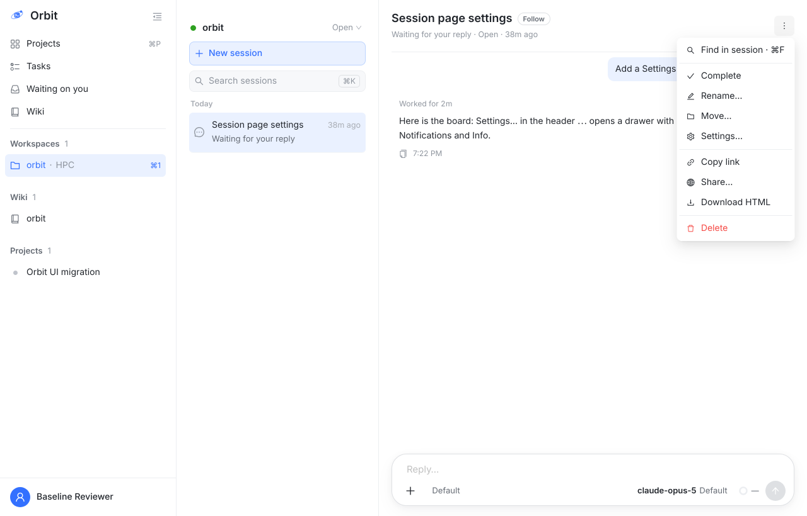
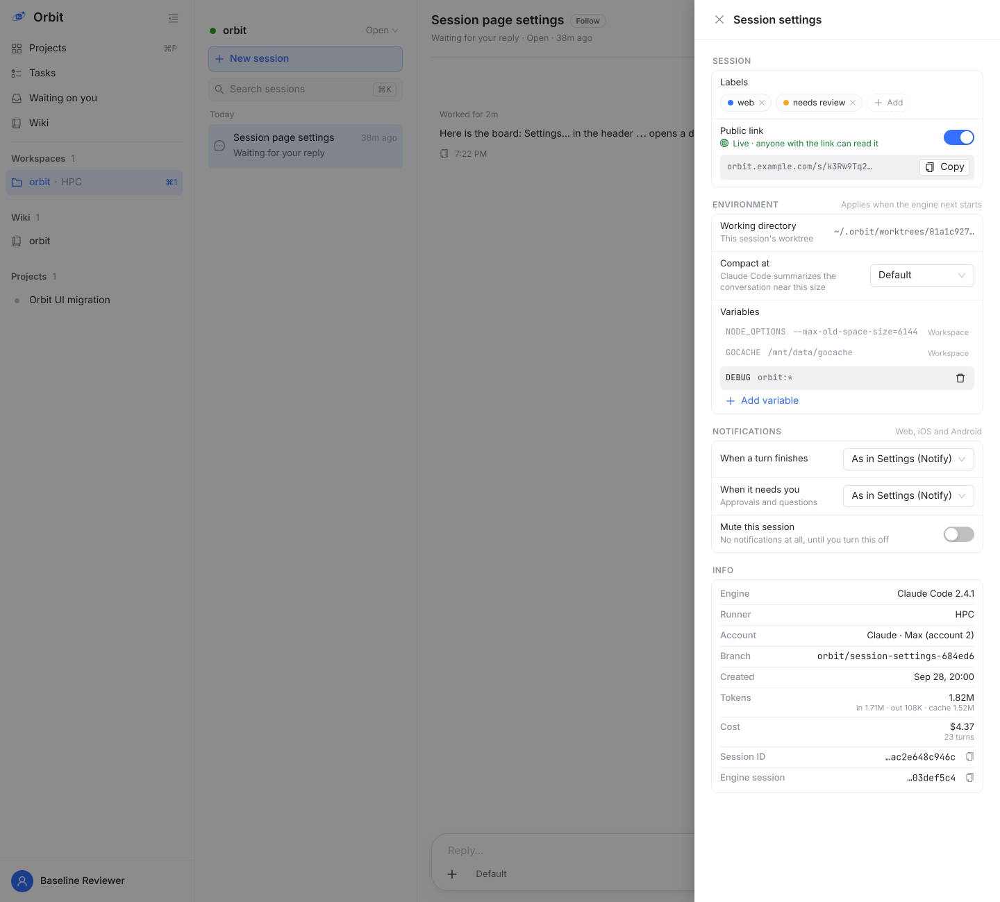
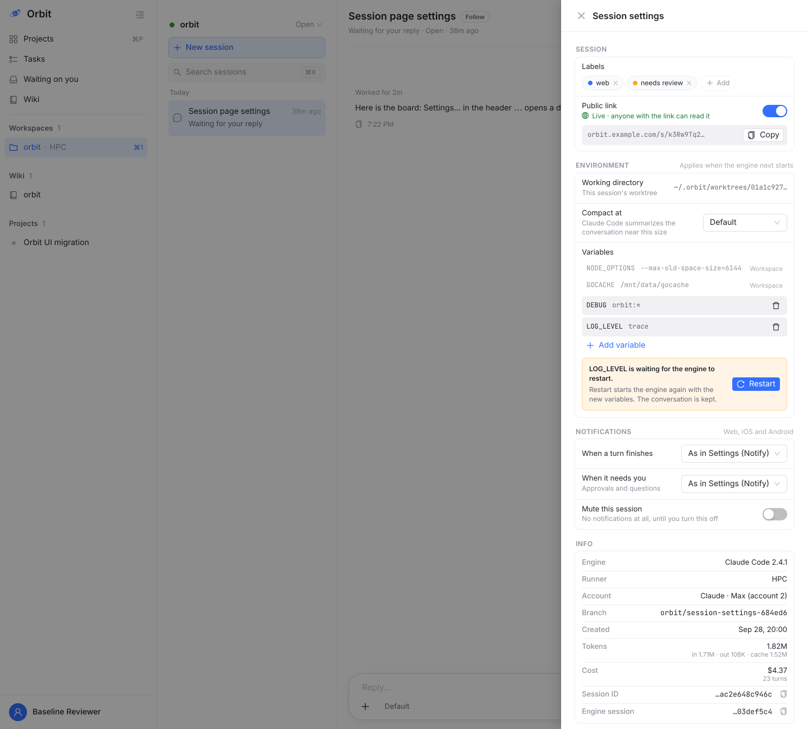
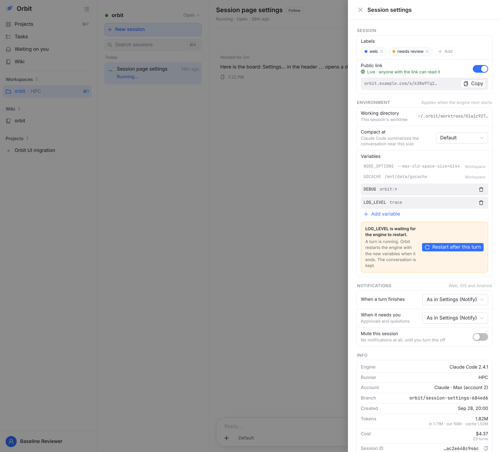
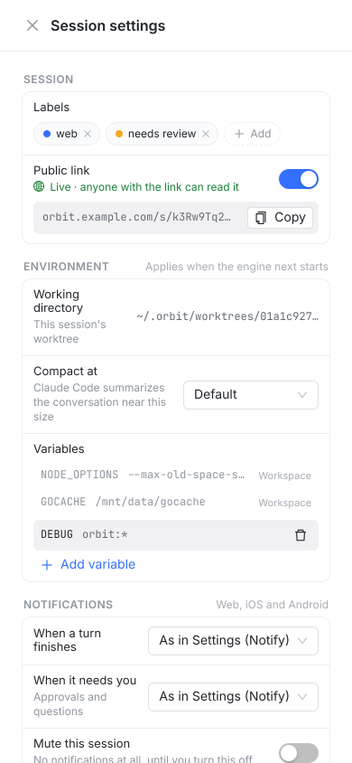
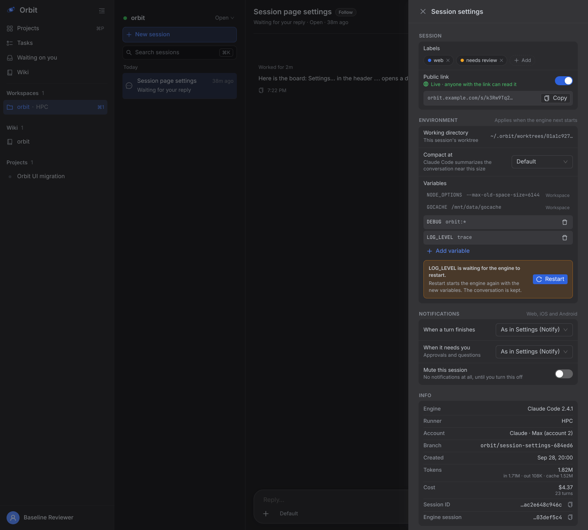

| 组 | 内容 | 生效 |
|---|---|---|
| Session | Labels：× 去掉，+ Add 从工作区标签里选。Public link：开关即 Share 的公开链接，开着时显示链接和 Copy。不放 Folder 和改标题 | 立即 |
| Environment | 工作目录（只读）；Compact at；变量：灰色行继承自 Workspace，底色行为本会话自有，可增删，同名时会话的覆盖 Workspace 的 | 引擎下次启动 / Restart |
| Notifications | 一轮结束时 / 需要你时：跟随账号设置 / 通知 / 不通知；静音本会话。Web、iOS、Android 推送都按这里 | 立即 |
| Info | Engine、Runner、Account、Branch、Created、Tokens（in / out / cache）、Cost（含轮数）、Session ID、Engine session | 只读 |
会改的地方：Web WorkspaceView.tsx（⋯ 菜单项）、新增 SessionSettingsDrawer.tsx/.css；apiserver 会话 PATCH 加 env、compact、通知字段，restart（含“这一轮结束后”），用量汇总；runner 起引擎时合并会话变量；推送发送端读会话级通知；shared DTO；iOS / Android 见原生图。




